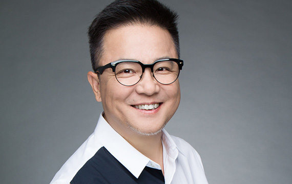
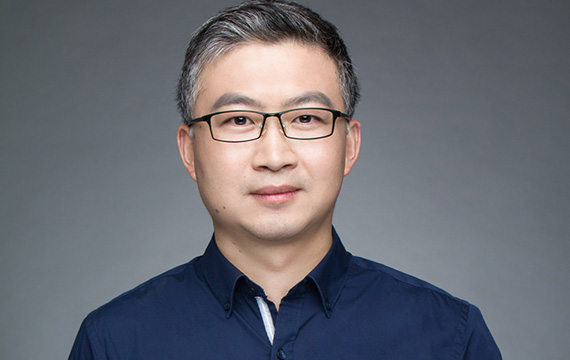
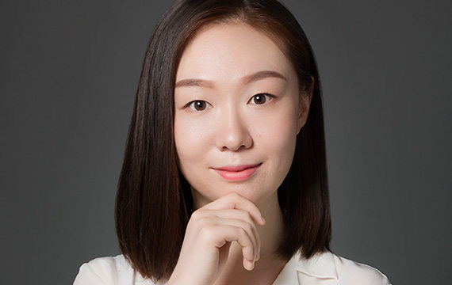

-

刘晓松
创始人刘晓松先生是腾讯的天使投资人和联合创始人，也是映客直播的孵化者。
-

董占斌
创始人董占斌先生拥有逾16年的投资经验。其职业履历横跨企业战略投资、投行、风险投资等投资工作的各个方面。
-

苏蔚
创始人苏蔚先生拥有超过18年的投资工作经验，参与过天使投资、企业战略投资、上市公司并购等不同阶段的投资工作。
-

涂岚
合伙人涂岚女士在青松基金负责募资、投后及财务、人力资源、法务、品牌等职能管理。
-

亓骥才
投资团队亓骥才自2013年加入青松基金以来，投资并管理了20余家企业，通过行业研究以及与创业者深度交流，形成了自己独到的投资方法与风格。
-

张放
投资团队张放是青松基金的投资经理，负责文化娱乐、内容和消费升级领域的投资。

熊浩然
投资团队熊浩然是青松基金的投资经理，负责消费升级领域的投资。
-
王兆乾
投资团队王兆乾，恪守科研方法论的学院派投资人。于2016年加入青松基金，主要负责教育、人工智能和其他创新技术领域的投资。

张腾
投资团队张腾负责文化娱乐、消费升级、学前教育领域的投资。她热衷于探索改变世界的科技与商业趋势，认为风险投资就是寻找正在发生的未来。

周亢
投资团队周亢是青松基金的投资分析师,负责线上线下娱乐、消费升级领域的投资。

张晨
投资团队2015年加入青松基金，研究体育文化领域。本科及研究生主攻新闻传播学，信息敏感、探寻未知、乐于分享，擅长挑选与联结。

孟德洋
投资团队孟德洋在青松基金负责发现泛娱乐、教育领域的投资机会。孟德洋在从上海交通大学研究生毕业后即加入青松基金。